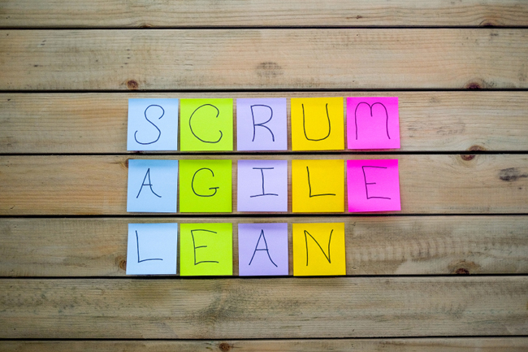

Scrum
Con la metodología Scrum el cliente se entusiasma y se compromete con el proyecto dado que lo ve crecer iteración a iteración. Asimismo le permite en cualquier momento realinear el software con los objetivos de negocio de su empresa, ya que puede introducir cambios funcionales o de prioridad en el inicio de cada nueva iteración sin ningún problema.
Scrum es simple. Es lo contrario de una gran colección de componentes obligatorios entrelazados, Scrum implementa el método científico del empirismo, reemplaza un enfoque algorítmico programado con una heurística.
El equipo Scrum consiste en propietario de un producto, el equipo de desarrollo y un Scrum Master. Equipos Scrum son uno mismo-organización y funciones.El Scrum Master lidera al equipo llevando a cabo las siguientes responsabilidades:
• Asegurar que exista una lista de requisitos priorizada y que esté preparada antes de la siguiente iteración.
• Facilitar las reuniones de Scrum (planificación de la iteración, reuniones diarias de sincronización del equipo, demostración, retrospectiva), de manera que sean productivas y consigan sus objetivos. Enseñar al equipo a auto gestionarse.
• No da respuestas, si no que guía al equipo con preguntas para que descubra por sí mismo una solución.